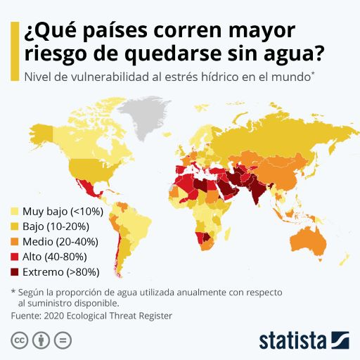

Mientras que 783 millones de personas en todo el mundo no tienen acceso a agua potable limpia, la agricultura animal utiliza casi 1/3 del agua potable disponible (Water Resources and Industry, 2013) (7). Un estudio del año 2016 publicado en Science of the Total Environment comparó la dieta mediterránea tradicional que incluye productos de origen animal, dietas pesco-vegetarianas y dietas vegetarianas y encontró que las dietas vegetarianas tenían la huella hídrica más baja, con una reducción del 30-53%. Una revisión sistemática publicada en Public Library of Science (2016) analizó una variedad de dietas comunes y sostenibles en comparación con la dieta estándar occidental. Encontraron que las dietas veganas utilizan la menor cantidad de agua y que los cambios en la dieta pueden reducir el consumo de agua en un 50%. Esta revisión también encontró que las emisiones de gases de efecto invernadero y el uso de tierra podrían reducirse hasta en un 70-80%.
El agua es un bien natural esencial para la vida en la tierra. Está presente en todas las actividades de nuestro día a día. Es necesaria para comer, asearnos o hidratarnos, pero también para cualquier desarrollo social y tecnológico. Sin embargo, su escasez y la contaminación del agua provocan que millones de personas tengan un acceso deficiente a este bien tan necesario.
Más de 2000 millones de personas experimentan un alto estrés hídrico, mientras que 4000 millones sufren una grave escasez de agua durante al menos un mes del año, según el Informe sobre el Desarrollo de los Recursos Hídricos en el Mundo de 2019.

Más de 2000 millones de personas experimentan un alto estrés hídrico, mientras que 4000 millones sufren una grave escasez de agua durante al menos un mes del año, según el Informe sobre el Desarrollo de los Recursos Hídricos en el Mundo de 2019.
“Más de 2000 millones de personas experimentan un alto estrés hídrico”
Hacer un uso responsable del agua es esencial. Pero antes de hablar de soluciones, ¿cuáles son los problemas que amenazan a este bien tan preciado?
Y la crisis climática agrava la situación. Cada vez tenemos menos agua disponible, y esto se ha convertido en una de las principales preocupaciones de los organismos internacionales. Por eso el Objetivo de Desarrollo Sostenible (ODS) 6 de la Agenda 2030 promovida por la ONU trata de garantizar la disponibilidad de agua y su gestión sostenible y el saneamiento para todos.
La contaminación del agua ocurre cuando sustancias nocivas, a menudo productos químicos o microorganismos, contaminan un arroyo, río, lago, océano, acuífero u otro cuerpo de agua, degradando su calidad y volviéndola tóxica para los seres humanos o el medio ambiente.Esta degradación de la calidad del agua se traduce directamente en problemas ambientales, sociales y económicos.
Desechos industriales: todavía a día de hoy son muchas las empresas que no tratan debidamente sus residuos y que terminan por verter a los ríos e incluso al mar enormes cantidades de productos contaminantes derivados de sus procesos industriales.
Calentamiento global: el aumento de las temperaturas provoca la alteración del agua al disminuir el oxígeno en su composición.
Deforestación: origina la aparición de sedimentos y bacterias bajo el suelo y la consiguiente contaminación del agua subterránea.
Pesticidas: cuando se usan en los campos de cultivo agrícola se filtran por los canales subterráneos y llegan a las redes de consumo.
Petróleo: de vez en cuando, se producen vertidos de crudo o petróleo a los océanos debido a un transporte ineficiente de esta sustancia. Las consecuencias son terribles tanto para el agua como para la biodiversidad que alberga.
Vertederos: son responsables, en muchas ocasiones, de la contaminación de suelos y aguas subterráneas por el arrastre de materiales contaminantes que puedan contener los residuos que almacenan, materiales pesados como el plomo o el mercurio que se trasladan hasta la tierra y las aguas cercanas a la planta.
Aguas residuales: la ONU asegura que más del 80 % de las aguas residuales del mundo que llegan al mar y a los ríos están sin depurar.
Productos farmacéuticos y de cuidado personal: la OMS explica que hay estudios que han encontrado en agua residual, agua potable y fuentes de agua concentraciones de químicos pertenecientes a este tipo de productos.
¿A qué afecta la contaminación del agua? Tanto al medio ambiente como a la salud de todos los seres vivos. Por todo ello, debemos garantizar la disponibilidad de agua, su gestión sostenible y el saneamiento para todos, tal y como recoge el sexto de los Objetivos de Desarrollo Sostenible adoptados por Naciones Unidas en la Agenda 2030. Entre las principales consecuencias de la contaminación del agua podemos destacar:
Peligros para la salud de las personas: Cada año, el agua no potable enferma a unos mil millones de personas. Las enfermedades transmitidas por agua contaminada incluyen el cólera, la giardia y la fiebre tifoidea. Incluso en las naciones ricas, las descargas accidentales o ilegales de las instalaciones de tratamiento de aguas residuales, así como la escorrentía de las granjas y las áreas urbanas, contribuyen con patógenos dañinos a las vías fluviales.
Pérdida de biodiversidad: Cuando la contaminación del agua provoca la proliferación de algas en un lago o en un entorno marino, la proliferación de nutrientes recién introducidos estimula el crecimiento de plantas y algas, lo que a su vez reduce los niveles de oxígeno en el agua. Esta escasez de oxígeno, conocida como eutrofización, sofoca plantas y animales y puede crear " zonas muertas ", donde las aguas están esencialmente desprovistas de vida. En ciertos casos, estas floraciones de algas nocivas también pueden producir neurotoxinas que afectan a la vida silvestre, desde ballenas hasta tortugas marinas.
Alteración de los hábitats acuáticos:Para prosperar, los ecosistemas saludables dependen de una red compleja de animales, plantas, bacterias y hongos, todos los cuales interactúan, directa o indirectamente, entre sí. El daño a cualquiera de estos organismos puede crear un efecto en cadena, poniendo en peligro ambientes acuáticos enteros.
Pérdidas económicas: el propio Banco Mundial aseguraba en un informe que el deterioro de la calidad del agua en todo el mundo está reduciendo drásticamente el potencial económico de las áreas muy contaminadas.
La Tierra es el planeta del agua. No hay una especie que habite este mundo que pueda subsistir sin ella. Pero se trata de un bien limitado. Sólo el 2,5 % del agua del planeta es agua dulce, del cual un 69 % se encuentra en glaciares y hielos, un 30 % en aguas subterráneas, un 0,7 % en permafrost y tan solo un 0,3 % en lagos y ríos, la fuente principal usada para el consumo humano diario.
Si quieres colaborar para mantener limpias nuestras aguas, puedes llevar a cabo diferentes acciones para prevenir la contaminación del agua de los ríos, lagos y mares. Te dejamos algunos consejos sencillos para seguir en tu día a día:
Cierra el grifo y ahorra agua cuando no sea necesario utilizarla. Por ejemplo, al lavarte los dientes, asearte o lavar los platos. Esto ayuda a prevenir la escasez de agua y reduce la cantidad de agua contaminada que necesita tratamiento.
Ten cuidado con lo que tiras por el lavabo o el inodoro. No tires aceites, papeles, pelos u cualquier otro residuo por el desagüe.
Evita los pesticidas y fertilizantes. Esto evitará que estos productos químicos se filtren hacia las fuentes de agua cercanas.
No arroje basura a los ríos, lagos u océanos. Ayude a limpiar cualquier basura que vea en las playas o alrededores y tírala en el contenedor de reciclaje adecuado.
Lleva a cabo acciones que ayuden a frenar el calentamiento global. De esta manera ayudarás a favorecer que se produzcan menos sequías o cualquier fenómeno meteorológico que pueda afectar al agua disponible.
Algunos documentales que te podrían interesar:
Con demasiada frecuencia, la contaminación por plástico domina la narrativa cuando se trata de la degradación de los océanos. En “Seaspiracy,” el director Ali Tabrizi descubre las prácticas destructivas de la pesca comercial. Desde la caza de ballenas y el cercenamiento de las aletas de los tiburones, hasta la sobrepesca, los océanos se enfrentan a un sinfín de amenazas por parte de industrias que no rinden cuentas. Esta película te hará pensar dos veces antes de comer mariscos.
Este documental sigue a Paul Watson, cofundador de Greenpeace y fundador de Sea Shepherd. Durante más de 40 años, ha sido inflexible en sus esfuerzos por proteger los mares, incluso si eso significa ser arrestado o enfrentarse a la violencia. Este valiente e implacable activista ecológico va más allá para enfrentarse a los cazadores furtivos y a los barcos que pescan ilegalmente. Ve este convincente documental para conocer su historia.
La contaminación por plásticos es un tema con el que todos estamos familiarizados, pero “Un océano de plástico” revela el impactante alcance de la contaminación oceánica. Con más de 20 locaciones documentadas a lo largo de 4 años, la película muestra lo extendida que está la contaminación por plástico. Pero no todo es pesimismo. También escuchamos a los científicos y a las personas que son pioneras en la búsqueda de soluciones, ¡así que hay esperanza!.